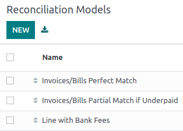
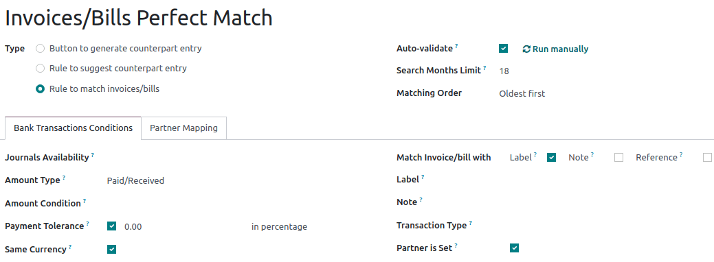
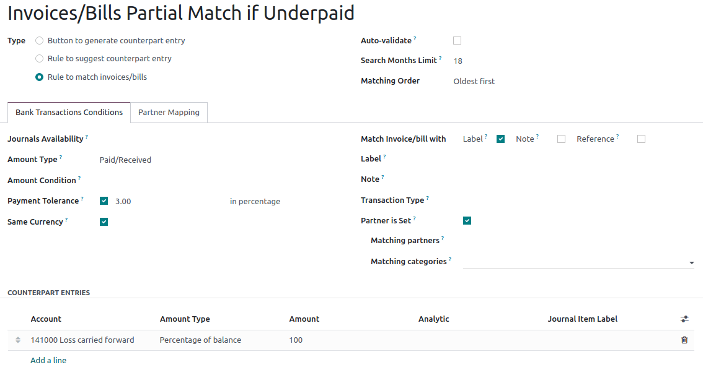

Reconciliation models¶
Reconciliation models are used to automate the bank reconciliation process, which is especially handy when dealing with recurring entries like bank fees. Reconciliation models can also be helpful in handling cash discounts.
Each model is created based on a model type and bank transaction conditions.
Reconciliation model types¶
The reconciliation models are available by going to . For each reconciliation model, a Type must be set. Three types of models exist:
Button to generate counterpart entry: a button is created in the resulting entry section of the bank reconciliation view. If clicked, this button generates a counterpart entry to reconcile with the active transaction based on the rules set in the model. The rules specified in the model determine the counterpart entry’s account(s), amount(s), label(s), and analytic distribution;
Rule to suggest counterpart entry: used for recurring transactions to match the transaction to a new entry based on conditions that must match the information on the transaction;
Rule to match invoices/bills: used for recurring transactions to match the transaction to existing invoices, bills, or payments based on conditions that must match the information on the transaction.
Default reconciliation models¶
In Odoo, different models are available by default depending on the company’s fiscal localization. These can be updated if needed. Users can also create their own reconciliation models by clicking New.
Important
If a record matches with several reconciliation models, the first one in the sequence of models is applied. You can rearrange the order by dragging and dropping the handle next to the name.
Invoices/Bills perfect match¶
This model should be at the top of the sequence of models, as it enables Odoo to suggest matching existing invoices or bills with a bank transaction based on set conditions.
Odoo automatically reconciles the payment when the Auto-validate option is selected, and the model conditions are perfectly met. In this case, it expects to find on the bank statement’s line the invoice/payment’s reference (as Label is selected) and the partner’s name (as Partner is set is selected) to suggest the correct counterpart entry and reconcile the payment automatically.
Invoices/Bills partial match if underpaid¶
This model suggests a customer invoice or vendor bill that partially matches the payment when the amount received is slightly lower than the invoice amount, for example in the case of cash discounts. The difference is reconciled with the account indicated in the counterpart entries tab.
The reconciliation model Type is Rule to match invoices/bills, and the Payment tolerance should be set.
Note
The Payment tolerance is only applicable to lower payments. It is disregarded when an overpayment is received.
See also
Line with bank fees¶
This model suggests a counterpart entry according to the rules set in the model. In this case, the reconciliation model Type is Rule to suggest counterpart entry, and the Label can be used for example, to identify the information referring to the Bank fees in the label of the transaction.

Note
Regular expressions, often abbreviated as Regex, can be used in Odoo in various ways to search, validate, and manipulate data within the system. Regex can be powerful but also complex, so it’s essential to use it judiciously and with a good understanding of the patterns you’re working with.
To use regular expressions in your reconciliation models, set the Transaction Type to Match Regex and add your expression. Odoo automatically retrieves the transactions that match your Regex expression and the conditions specified in your model.

Partner mapping¶
Partner mapping allows you to establish rules for automatically matching transactions to the correct partner account, saving time and reducing the risk of errors that can occur during manual reconciliation. For example, you can create a partner mapping rule for incoming payments with specific reference numbers or keywords in the transaction description. When an incoming payment meets these criteria, Odoo automatically maps it to the corresponding customer’s account.
To create a partner mapping rule, go to the Partner Mapping tab and enter the Find Text in Label, Find Text in Notes, and Partner.